Прикорм: с чего начать?
Первый прикорм — важный этап в жизни малыша.
15 июня 2025Добро пожаловать в наш новый удивительный мир!
Семейный медицинский центр «МОМ» — это место, где забота о детях и поддержка родителей становятся приоритетом. Мы предлагаем комплексные медицинские услуги, развивающие занятия и тёплую атмосферу для всей семьи.
с 9:00 до 21:00 ежедневно
Записаться на прием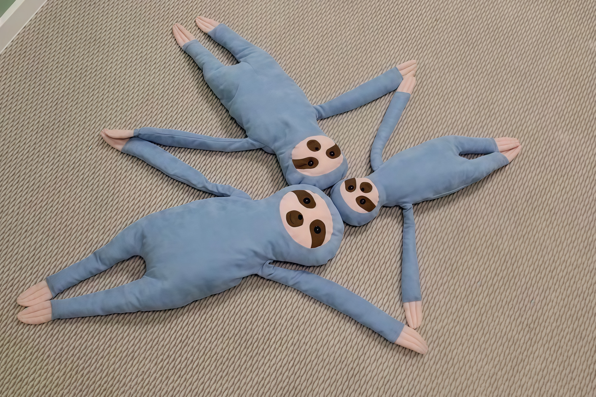
В нашей компетенции не только медицинские, но и психологические виды амбулаторной помощи всей Вашей семье
Высококвалифицированные специалисты, для кого забота о детском здоровье — призвание
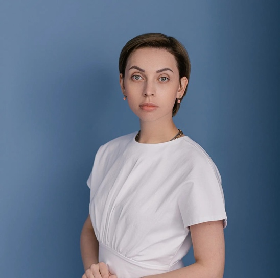
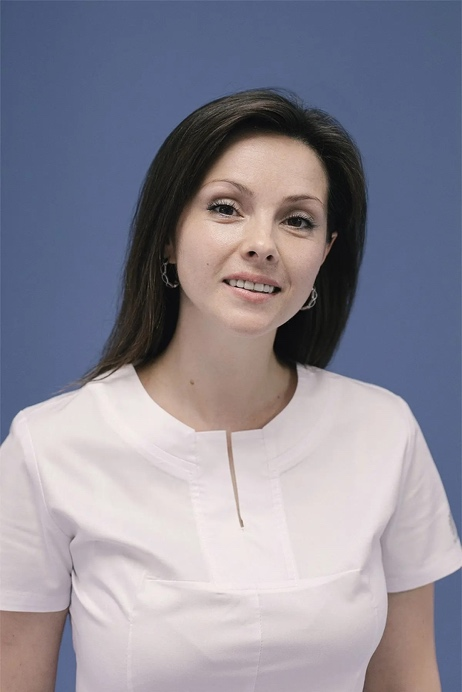
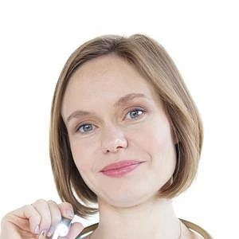
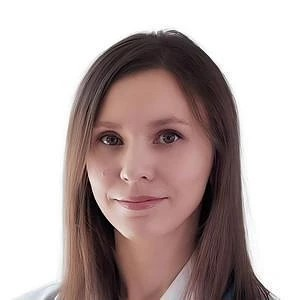
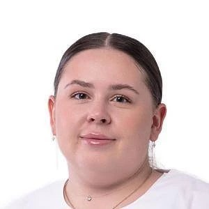
Рекомендуем литературу по детской психологии и воспитанию
Мы собрали для вас подборку лучших книг о детском развитии, воспитании и здоровье. Каждая книга — это мудрость опытных авторов, которая поможет вам лучше понять своего ребенка.
Будьте в курсе событий медицинского центра MOM
Новостей пока нет
"Выставили страшные диагнозы моему ребенку. В панике приехала к доктору Карине Романовне и Екатерине Андреевне. Никогда не устану благодарить их. Атмосфера в клинике такая теплая, спокойная. Вежливый персонал, все для комфорта мамы и малыша."
"Были в клинике с дочкой. У ребенка тяжелая форма эпилепсии, вследствие чего ЗПР. Проходим курс Войта-терапии у Каплиной Карины Романовны. Обращаемся в клинику не первый раз. И после каждого курса результат налицо."
"Были в клинике Mom вместе с дочерью. Внимательное отношение, от администраторов до врачей. Индивидуальный подход к пациенту. Отдельное спасибо врачу УЗИ Петровской Н.Ю. Профессионал своего дела."
Медицинский дисклеймер: Информация на сайте носит ознакомительный характер и не является медицинской консультацией. Диагностику и лечение назначает только врач после очного осмотра. Самолечение может быть опасным для вашего здоровья.
Что говорят о нас мамы и папы
"Выставили страшные диагнозы моему ребенку. В панике приехала к доктору Карине Романовне и Екатерине Андреевне. Никогда не устану благодарить их. Успокоили, все объяснили. К моему малышу относились с теплом и заботой. Атмосфера в клинике такая теплая, спокойная. Вежливый персонал, все для комфорта мамы и малыша. Буду советовать только эту клинику мамам. Грамотные специалисты, знающие свое дело на все 100%."
"Посещаю вторично. Выбрала именно эту клинику и специалиста УЗИ Казанову М.В. Грамотный подход, ясная и четкая консультация. Врач также отличается своим вниманием, деликатностью в общении и умением правильно интерпретировать результаты обследования. Спасибо! Все супер! Порекомендую знакомым непременно. При необходимости, приду именно сюда."
"Были в клинике с дочкой. У ребенка тяжелая форма эпилепсии, вследствие чего ЗПР. Проходим курс Войта-терапии у Каплиной Карины Романовны. Обращаемся в клинику не первый раз. И после каждого курса результат налицо. Огромным плюсом считаю напоминание о времени приема, мне, как многодетной маме с бесконечным списком задач на день, очень удобно."
"Были в клинике «Mom» вместе с дочерью. Внимательное отношение, от администраторов до врачей. Индивидуальный подход к пациенту. Отдельное спасибо врачу УЗИ Петровской Н.Ю. Профессионал своего дела. Рекомендую и врача, и клинику."
"Обращаемся, когда нужно срочно показать ребенка врачу. Здесь я уверена, что к ребенку отнесутся внимательно. Собирают подробный анамнез. Педиатр обязательно посмотрит уши, что для меня важно, и выпишет качественное лечение без лишних неэффективных лекарств. В этой клинике тот подход, который я и ожидаю от врачей. В клинике чисто, красиво, всё для детей."
"В медицинский центр обращалась с сыном неоднократно. Оказавшись там однажды, больше не хочется искать чего-то ещё. Тут работают настоящие профессионалы своего дела. На ресепшене всегда доброжелательные администраторы. В клинике прекрасная атмосфера, много разнообразных игрушек, всегда комфортно и светло. Это место сделано по-настоящему с любовью к детям и их семьям."
"Обратилась в клинику, так как потребовалась срочная консультация педиатра. На ресепшен встретил доброжелательный администратор, все документы оформили достаточно быстро. Врач Ткаченко Е.А. очень внимательно выслушала все жалобы, дала рекомендации по лечению. Осмотр врача был очень компетентным. Атмосфера в клинике приятная, уютная, очередей нет. Цены приемлемые. Не пожалела, что обратилась именно в эту клинику. Рекомендую однозначно."
"С рождения наблюдаемся в этой клинике. Всем рекомендую. Уютная клиника. Удобное расположение и парковка. Никогда нет толпы, не задерживается по времени прием. Удобная и комфортная комната для кормления и переодевания ребенка, есть все необходимое (от салфеток до подгузников). Моя дочь на груди, кушаем и спим прям во время приема."
"Ходим в клинику с дочкой к педиатру с годика. Прекрасное место, всё продумано для мамы и ребенка! Вежливое, доброе отношение. Все очень компетентные и грамотные врачи. Располагают к себе ребенка, что немаловажно. Прием проходит без слез. И очень удобно, когда после приема создают чат с врачом и до завершения лечения можно быть на связи."
"В клинику обращалась впервые и не прогадала. Ходили на УЗИ с сыном. Клиника очень понравилась, всё красиво, стильно и чисто. Персонал доброжелательный. Надежда Юрьевна расположила нас полностью к себе, подробно объясняла каждую манипуляцию, мы остались в восторге! Спасибо огромное! Рекомендуем!"
"В клинику пришли уже повторно с моим ребенком на УЗИ. В клинике очень уютно, чисто, светло. На ресепшен очень вежливый администратор. УЗИ делали ребенку (1 годик), врач была очень внимательна и аккуратна, предложила ему развивающие игрушки, ребенок заинтересовался и не капризничал. Во время исследования врач с ребенком разговаривала, ребенок реагировал на голос."
"Отличная клиника, чисто, уютно. Персонал на ресепшн вежливый. Принимают лучшие врачи города. Были на приеме у педиатра Ткаченко Е.А. — замечательный врач! Прием не скомканный, как у других врачей. Посмотрела моего малыша, расположила, ответила на все вопросы. Рекомендую!"
Команда профессионалов медицинского центра MOM
Комплексная медицинская и психологическая помощь всей семье
Комплексная забота о здоровье вашего ребенка с первых дней жизни
Психологическая поддержка для детей и родителей
Лечение и профилактика заболеваний всей семьи
Коррекция речевых нарушений у детей
Ультразвуковая диагностика для детей и взрослых
Восстановление и укрепление здоровья
Диагностика и лечение нервной системы
Нейрофизиологическая реабилитация
Лечебный и профилактический массаж для детей
Активация врожденных движений
Лечение с помощью лошадей
Диагностика и лечение эндокринных нарушений
Обследование высших психических функций
Комплексное сопровождение малыша и мамы
Подборка лучших книг о беременности, родах, родительстве и социальных взаимодействиях
Комплексная забота о здоровье вашего ребенка с первых дней жизни
В нашем центре педиатрия — это не просто осмотр и назначение лечения. Это комплексный подход к здоровью ребенка, включающий профилактику, наблюдение за развитием, консультирование родителей и формирование здоровых привычек.
Наши педиатры работают по принципу доказательной медицины, не назначают ненужные анализы и лекарства. Прием длится от 30 до 60 минут — мы уделяем время каждому пациенту.
Осмотр, консультация, сбор анамнеза
Контроль динамики, корректировка лечения
Составление индивидуального календаря прививок
Консультация по питанию и прикорму
Удалённая консультация врача
Выездной осмотр в пределах г. Курска
Скидка 30% при осмотре второго ребёнка
Выезд в выходные и праздничные дни
Выезд в ближайший район
Осмотр малыша в первые дни жизни
Краткий осмотр и консультация педиатра
Психологическая поддержка для детей и родителей
Мы понимаем, что здоровье ребенка невозможно отделить от эмоционального состояния семьи. Наши психологи и психотерапевты работают с детьми и родителями, помогая справляться со стрессом, тревожностью, поведенческими проблемами.
Индивидуальная работа с ребёнком или родителем
Терапия для детей через игру и творчество
Краткая консультация по вопросу
Комплект из 4 занятий для ребёнка
Комплект из 8 занятий для ребёнка
Осмотр, диагностика, назначение лечения
Контроль динамики, корректировка терапии
Лечение и профилактика заболеваний всей семьи
Терапевтическое направление в центре MOM охватывает широкий спектр услуг для взрослых и детей. Мы придерживаемся принципа минимальной медикаментозной нагрузки и максимального комфорта для пациента.
Диагностика, лечение, профилактика заболеваний
Справки в школу, детский сад, бассейн, для выезда
Прививки по календарю и по показаниям
Обращайтесь по телефону +7 (4712) 36-00-61
Коррекция речевых нарушений у детей
Наши логопеды работают с детьми от 1 года до 7 лет. Мы используем современные методики коррекции речи, включающие игровые элементы, чтобы занятия были интересными и эффективными.
Комплексная оценка речевого развития
Коррекция артикуляционного аппарата
Постановка и автоматизация звуков
Обращайтесь по телефону +7 (4712) 36-00-61
Ультразвуковая диагностика для детей и взрослых
Ультразвуковая диагностика — безопасный и информативный метод исследования. В нашем центре используется современное оборудование, позволяющее проводить точную диагностику.
Головной мозг, сердце, ОБП, ТБС, МВС
Головной мозг, сердце, ОБП, ТБС, МВС, ШОП
Сердце, ОБП, МВС, ЩЖ, репродуктивная система
УЗИ сердца для детей и взрослых
УЗИ головного мозга у новорождённых
Диагностика состояния тазобедренных суставов
Пищевод, желудок, печень, поджелудочная и др.
Комплексное обследование после перенесённой инфекции
Ультразвуковое исследование щитовидной железы
Диагностика после хирургических вмешательств
Ультразвуковое исследование лёгких
Диагностика молочных желез
УЗИ сосудов для детей
Исследование 1 зоны
Исследование 2 зон
Общие сонные, подключичные, внутренние сонные, позвоночные артерии, брахиоцефальный ствол
Восстановление и укрепление здоровья
Физиотерапия в нашем центре направлена на восстановление функций организма, укрепление иммунитета естественным путем и профилактику заболеваний.
Стимуляция сенсо-моторного развития
8 занятий на виброплатформе
Разовое занятие, 30 мин.
8 занятий по 30 мин.
Комплексный подход к телу ребёнка
Для детей старше 3–5 лет
Диагностика и лечение нервной системы
Наши неврологи специализируются на детской неврологии. Мы проводим комплексную диагностику и лечение заболеваний нервной системы у детей всех возрастов.
Осмотр, диагностика, назначение лечения
УЗИ головного мозга у новорождённых
Электроэнцефалография
Обращайтесь по телефону +7 (4712) 36-00-61
Нейрофизиологическая реабилитация
Бобат-терапия — это концепция реабилитации, направленная на улучшение двигательных функций у детей с нарушениями нервной системы. Методика основана на понимании нормального развития движений.
Индивидуальное занятие по методике Бобат
Развитие равновесия и координации
Использование нескольких методик
5 занятий двигательной терапией
8 занятий двигательной терапией
Лечебный и профилактический массаж для детей
Детский массаж — важная часть комплексного ухода за ребенком. Наши специалисты проводят массаж с первых дней жизни, помогая правильному развитию мышечного корсета и профилактике заболеваний.
Массаж и гимнастика для младенцев
Комплект из 10 массажей и гимнастик
Медицинский массаж для детей дошкольного возраста
Медицинский массаж для детей и подростков
Массаж и гимнастика с выездом на дом
10 занятий массажа и гимнастики с выездом
Для детей 3–8 лет, 40 мин.
Для детей раннего возраста и 3–8 лет
Активация врожденных движений
Войта-терапия — это методика, основанная на активации врожденных программ движения через определенные точки на теле ребенка. Метод эффективен при различных неврологических нарушениях.
Индивидуальное занятие по методике Войта
Выездное занятие по методике Войта
Курс из 10 занятий
Интенсивный 21-дневный курс
Комбинированный курс с виброплатформой
Первичная диагностика по методике Войта
Лечение с помощью лошадей
Иппотерапия — метод реабилитации с использованием лошади как терапевтического инструмента. Занятия проводятся под руководством сертифицированных специалистов.
Занятие на лошади с инструктором
Занятие в мини-группе
Обращайтесь по телефону +7 (4712) 36-00-61
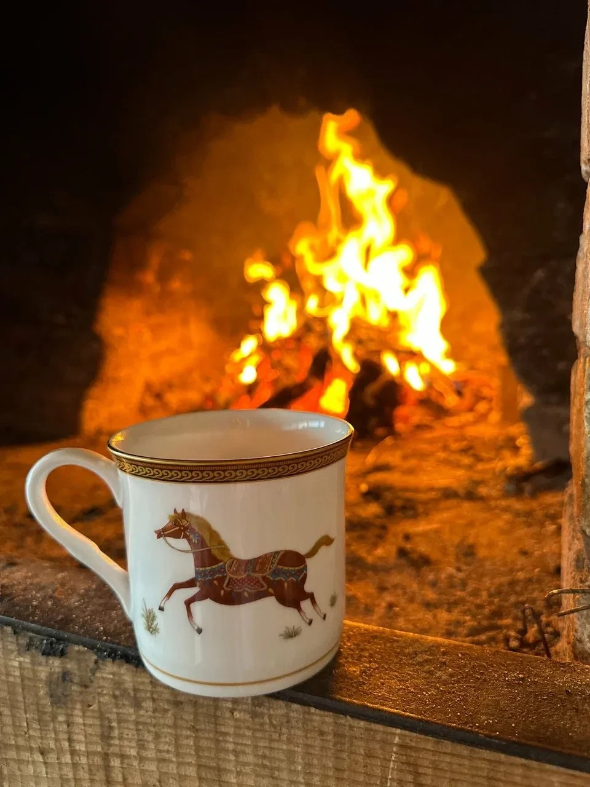
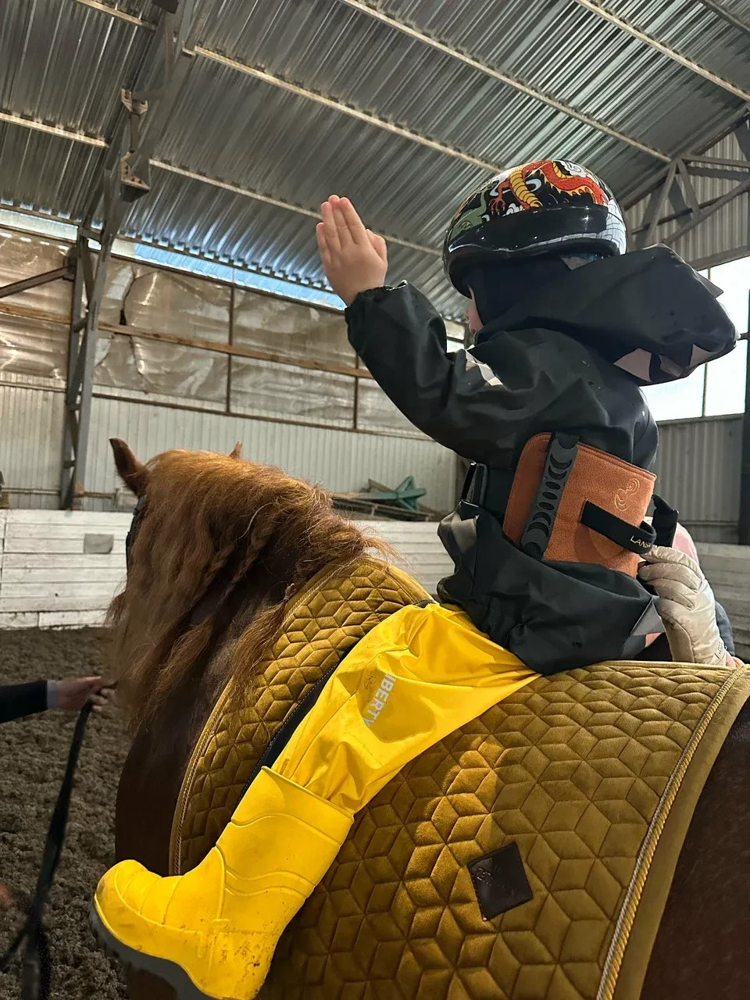
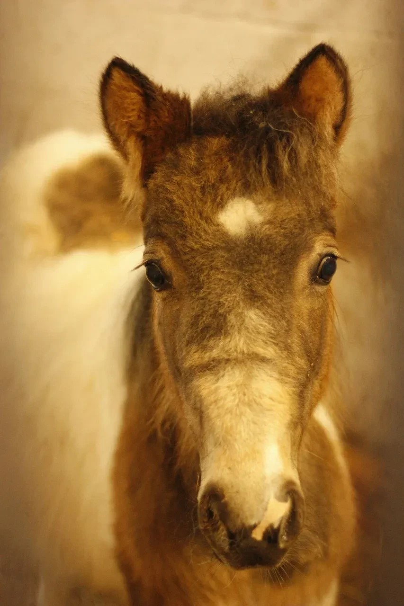
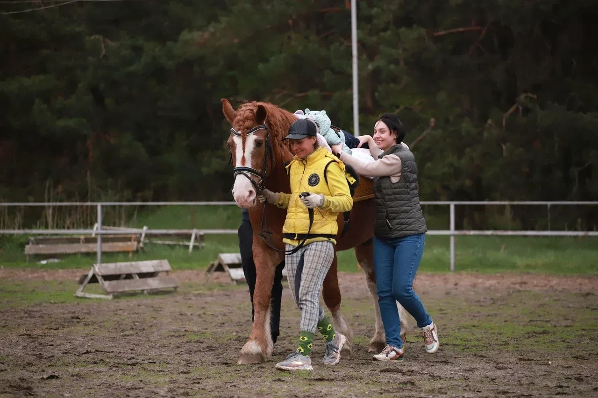
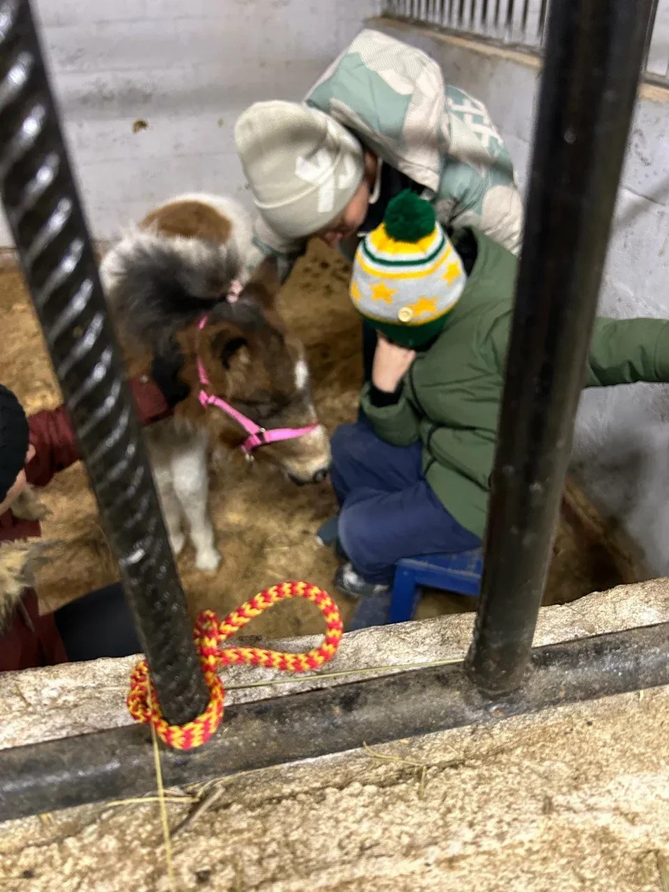
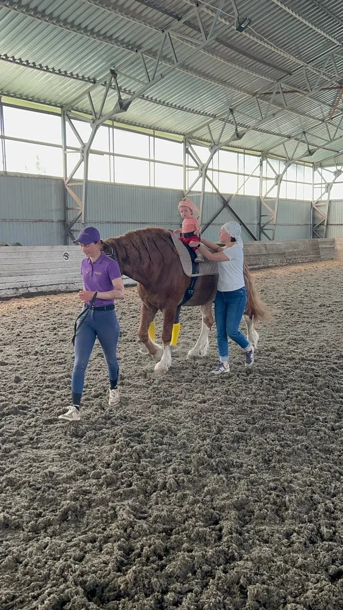
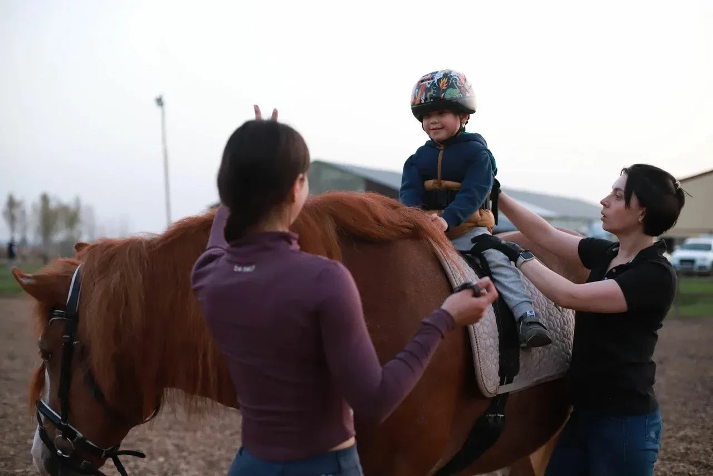
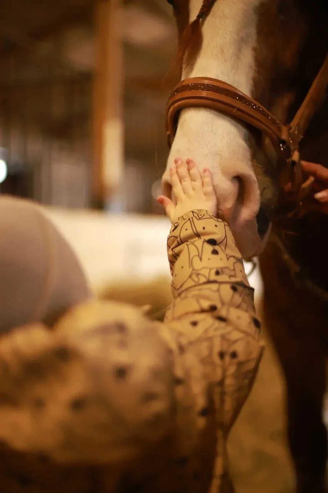
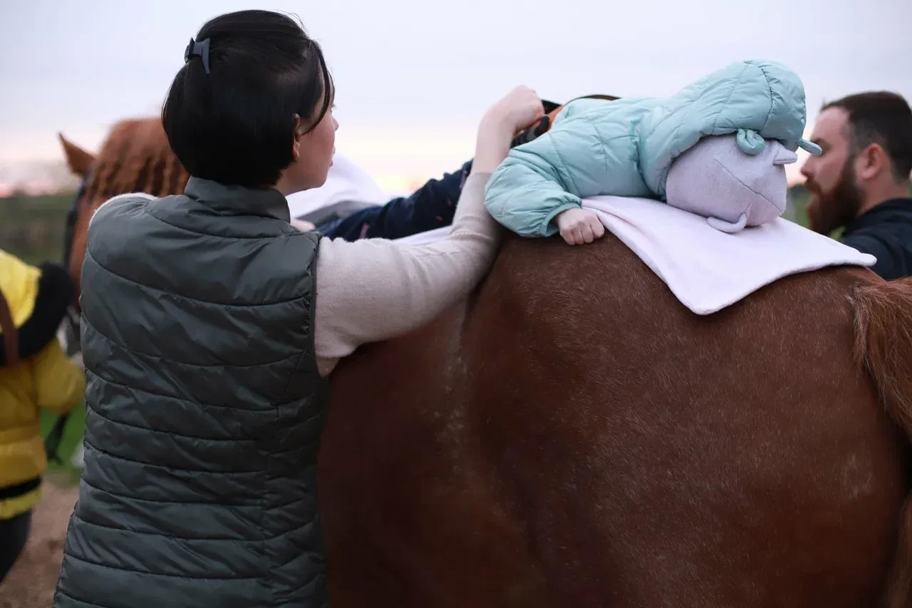
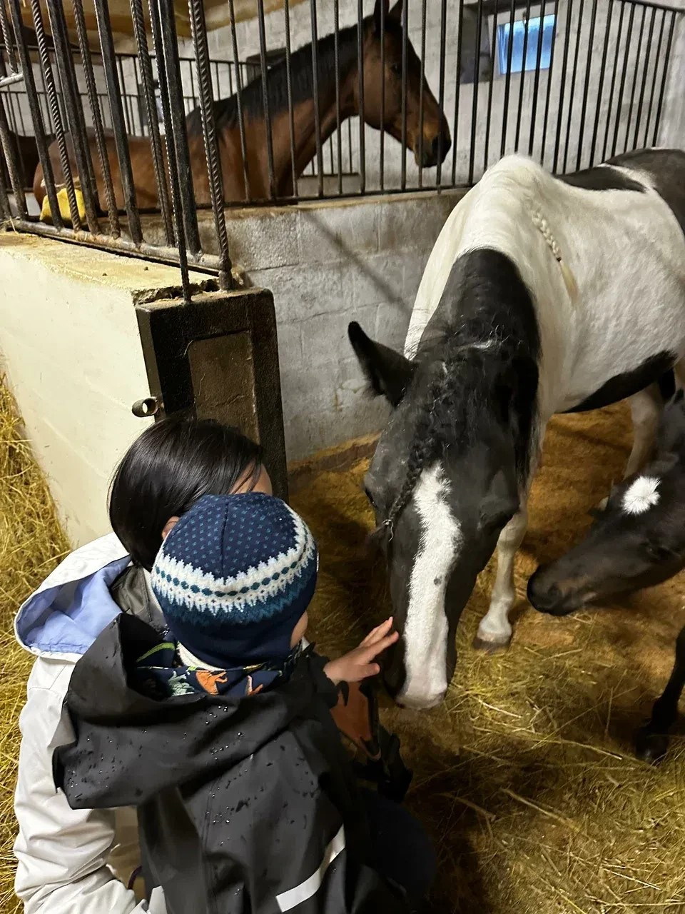
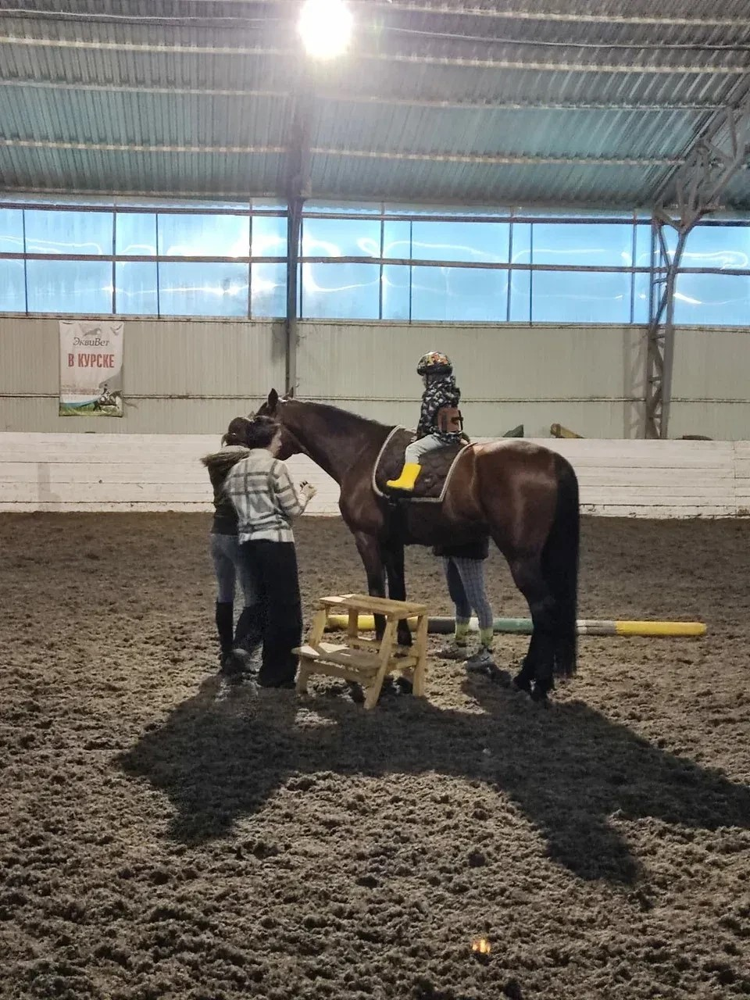
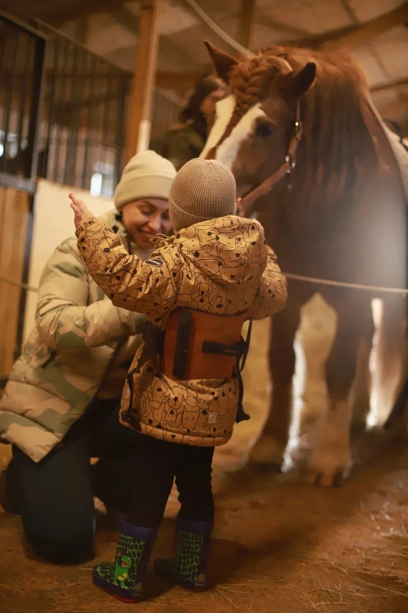
Актуальные цены на все услуги центра MOM. Точная стоимость определяется после консультации специалиста.
Советы от наших специалистов по здоровью, развитию и воспитанию детей.
Первый прикорм — важный этап в жизни малыша.
15 июня 2025Как наладить режим дня и помочь малышу спокойно засыпать.
10 июня 2025Показания и противопоказания.
5 июня 2025Как развивается речь у детей и когда стоит бить тревогу.
28 мая 2025От первых движений до уверенной ходьбы — путь вашего малыша.
20 мая 2025Здоровье детских ножек — основа правильной осанки.
12 мая 2025Настоящая Политика конфиденциальности персональных данных (далее — Политика) действует в отношении всей информации, которую Семейный медицинский центр «MOM» (Оператор) может получить о Пользователе во время использования сайта.
Использование сайта означает безоговорочное согласие Пользователя с настоящей Политикой и указанными в ней условиями обработки персональных данных.
Оператор может собирать следующие персональные данные:
Оператор обрабатывает персональные данные в следующих целях:
Обработка персональных данных осуществляется на основании:
Персональные данные хранятся в течение срока, необходимого для достижения целей обработки, но не менее сроков, установленных законодательством РФ (включая сроки хранения медицинской документации).
Субъект персональных данных имеет право:
Оператор принимает необходимые организационные и технические меры для защиты персональных данных от неправомерного доступа, уничтожения, изменения, блокирования, копирования, распространения.
Сайт использует файлы cookie для обеспечения корректной работы, анализа посещаемости и улучшения пользовательского опыта. Пользователь может отключить cookie в настройках браузера, однако это может повлиять на функциональность сайта.
Оператор персональных данных: ООО «К-Мед» (медицинский центр «MOM»)
Руководитель: Каплин Антон Николаевич (генеральный директор)
Тел: +7 (4712) 36-00-61
Адрес: 305004, г. Курск, ул. Л. Толстого, д. 21, пом. III
Лицензия: № Л041-01147-46
Оператор вправе вносить изменения в настоящую Политику. Новая редакция вступает в силу с момента её размещения на сайте.
Последнее обновление: июль 2025 г.
Полное наименование: Общество с ограниченной ответственностью «К-Мед»
Торговое наименование: Медицинский центр «MOM»
ОГРН: 1214600012164 (от 02.11.2021)
ИНН: 4632286489
КПП: 463201001
ОКПО: 49254427
Регистрационный номер СФР: 1107513556
Уставный капитал: 10 000 руб.
305004, Курская область, г. Курск, ул. Л. Толстого, д. 21, пом. III
Генеральный директор: Каплин Антон Николаевич
Действует с 02.11.2021
Лицензия на медицинскую деятельность: № Л041-01147-46
Основной: Деятельность больничных организаций (86.10)
Данные актуальны на 2025 г. по сведениям ЕГРЮЛ.
Диагностика и лечение эндокринных заболеваний у детей и взрослых
В нашем центре проводится комплексное обследование при нарушениях роста, полового развития, сахарном диабете, заболеваниях щитовидной железы и надпочечников. Эндокринная система играет ключевую роль в развитии организма ребёнка, регулируя обмен веществ, рост, половое созревание и многие другие важные процессы.
Осмотр, диагностика, назначение лечения
Краткая первичная консультация
Диагностика и коррекция познавательных функций ребёнка
Нейропсихологическая диагностика и коррекция направлены на выявление и развитие познавательных функций ребенка. Мы проводим комплексную оценку памяти, внимания, мышления, речи и моторики. Наши специалисты используют современные методики диагностики, которые помогают выявить особенности развития нервной системы ребёнка и разработать эффективную программу коррекции.
Осмотр, диагностика, назначение программы
Оценка памяти, внимания, мышления, речи, моторики
Индивидуальные занятия по разработанной программе
Рекомендации по развитию ребенка дома
Поддержка молодых родителей в первые критические дни жизни малыша
Школа для новорождённых — это специальная программа поддержки молодых родителей в первые критические 42 дня жизни малыша. Наши специалисты помогут вам наладить грудное вскармливание, научат уходу за новорождённым, подскажут как распознать тревожные симптомы и когда нужно обращаться к врачу. Первые шесть недель жизни ребёнка — это уникальный период, когда закладываются основы здоровья, привязанности и гармоничного развития.
Осмотр новорождённого, оценка состояния здоровья
Сопровождение ребёнка первых месяцев жизни
Особенности сенсорного и моторного развития
Осмотр малыша в первые дни жизни
Полное руководство по введению первого прикорма для вашего малыша
Введение прикорма — важный этап в жизни каждого малыша. От того, как и когда начнётся знакомство ребёнка с новой пищей, зависит его дальнейшее отношение к еде, здоровье пищеварительной системы и общее физическое развитие. В этой статье мы подробно разберём все аспекты введения прикорма, опираясь на рекомендации ВОЗ и опыт ведущих педиатров.
Согласно рекомендациям Всемирной организации здравоохранения (ВОЗ), прикорм следует начинать с 6 месяцев. К этому возрасту пищеварительная система малыша достаточно созрела для переваривания новой пищи, и ребёнок физиологически готов к приёму пищи ложкой.
До 6 месяцев достаточно грудного молока или адаптированной смеси, которые полностью обеспечивают все потребности ребёнка в питательных веществах. Раннее введение прикорма (до 4 месяцев) может перегрузить почки и пищеварительную систему, а также повысить риск развития аллергии.
Традиционно первым прикормом рекомендуется овощное пюре. Кабачок, брокколи или цветная капуста — идеальные варианты для начала. Овощи богаты витаминами, минералами и клетчаткой, легко усваиваются и редко вызывают аллергию.
Начинайте с одного овоща, вводя его в течение 3-5 дней. Это позволит отследить реакцию организма и выявить возможную непереносимость. После успешного введения первого овоща можно добавлять другие — морковь, тыкву, картофель.
После овощей в рацион постепенно добавляют каши (безглютеновые — гречневую, кукурузную, рисовую), затем фруктовое пюре, мясное пюре, творог, яичный желток и рыбу.
Прежде чем начинать прикорм, убедитесь, что ваш малыш действительно к нему готов. Вот ключевые признаки:
✅ Возраст 6 месяцев и старше — пищеварительная система созрела
✅ Ребёнок уверенно держит голову — может сидеть с поддержкой
✅ Появился интерес к еде — тянется к вашей тарелке, следит за ложкой
✅ Возникает выталкивающий рефлекс — ребёнок может заглатывать пищу с ложки
✅ Удвоение веса — малыш набрал в два раза больше веса, чем при рождении
🔹 Начинайте с малого — первая порция должна быть ½ чайной ложки
🔹 Увеличивайте постепенно — добавляйте по ½-1 чайной ложке ежедневно
🔹 Один новый продукт за раз — наблюдайте за реакцией 3-5 дней
🔹 Вводите утром — легче отследить реакцию в течение дня
🔹 Не добавляйте соль и сахар — детская пища должна быть натуральной
🔹 Поддерживайте грудное вскармливание — прикорм дополняет, а не заменяет молоко
🔹 Готовьте свежим — лучше готовить перед едой, не хранить долго
| Возраст | Продукты | Консистенция | Частота |
|---|---|---|---|
| 6 месяцев | Овощные пюре | Жидкое пюре | 1 раз в день |
| 6-7 месяцев | Каши, фрукты | Густое пюре | 2 раза в день |
| 7-8 месяцев | Мясо, творог | Пюре с мелкими кусочками | 2-3 раза в день |
| 8-9 месяцев | Рыба, яйцо | Мелкие кусочки | 3 раза в день |
| 10-12 месяцев | Кефир, сыр | Мелко нарезанная еда | 3-4 раза в день |
Помните, что каждый ребёнок уникален, и эти сроки носят рекомендательный характер. Всегда консультируйтесь с вашим педиатром перед началом прикорма, особенно если у малыша есть особенности здоровья или аллергические реакции. В центре MOM наши специалисты помогут составить индивидуальный план введения прикорма именно для вашего ребёнка.
Как массаж помогает вашему малышу расти здоровым и счастливым
Детский массаж — это не только приятная процедура, но и мощный терапевтический инструмент, который сопровождает развитие ребёнка с самых первых дней жизни. Правильно выполненный массаж способствует физическому и нервно-психическому развитию, укрепляет иммунитет и помогает организму малыша адаптироваться к новым условиям жизни.
В нашей статье мы подробно расскажем о пользе детского массажа, когда и как начинать занятия, какие техники существуют, а также о противопоказаниях и правилах подготовки к процедуре.
Детский массаж оказывает комплексное воздействие на организм малыша:
🌟 Улучшает мышечный тонус — при гипертонусе массаж помогает расслабить напряжённые мышцы, а при гипотонусе — активизирует и укрепляет их. Регулярные занятия помогают нормализовать тонус, что особенно важно в первые месяцы жизни.
🌟 Стимулирует кровообращение — массажные движения улучшают приток крови к тканям, обеспечивая лучшее питание органов и ускоряя обменные процессы.
🌟 Укрепляет иммунитет — воздействие на лимфатическую систему помогает организму бороться с инфекциями, активизируя защитные силы.
🌟 Улучшает сон — после массажа малыши лучше засыпают и спят глубже. Массаж снимает напряжение, накопленное за день, и способствует расслаблению.
🌟 Стимулирует нервную систему — тактильные ощущения во время массажа развивают сенсорное восприятие, координацию движений и моторику.
🌟 Помогает при коликах — особые техники массажа животика облегчают газоотделение и снимают спазмы, уменьшая дискомфорт у малыша.
Первый массаж можно начинать уже с 3-4 недель жизни, при условии, что малыш здоров и нет противопоказаний. Начинайте с лёгких поглаживающих движений по спинке, ручкам и ножкам, постепенно усложняя технику.
Для недоношенных детей и малышей с особенностями развития начало массажа следует согласовать с педиатром. В нашем центре специалисты подберут индивидуальную программу для каждого ребёнка.
👐 Поглаживание — самое мягкое и приятное движение. Выполняется ладонью или пальцами по направлению к лимфатическим узлам. Расслабляет мышцы, улучшает кровообращение.
👐 Растирание — более интенсивное движение, выполняемое круговыми или спиральными движениями. Разогревает мышцы, улучшает эластичность тканей.
👐 Разминание — глубокое воздействие на мышечную ткань. Используется для работы с повышенным тонусом, способствует расслаблению напряжённых мышц.
👐 Потряхивание и поколачивание — выполняются лёгкими постукиваниями по мышцам. Тонизируют мышцы, стимулируют кровообращение.
👐 Массаж животика — круговые движения по часовой стрелке вокруг пупка. Помогает при запорах и коликах.
⚠️ Температура тела выше 37.5°C
⚠️ Острые инфекционные заболевания
⚠️ Высыпания, воспаления на коже
⚠️ Тяжёлые заболевания сердца и лёгких
⚠️ Гематологические заболевания
⚠️ Первые 3 дня после вакцинации
При наличии хронических заболеваний массаж следует проводить только после консультации с врачом и под его наблюдением.
🌡️ Комната должна быть тёплой — оптимальная температура 22-24°C
🌡️ Подготовьте чистое полотенце или пелёнку — мягкую и удобную
🌡️ Используйте детское масло — гипоаллергенное, без запаха
🌡️ Снимите украшения с рук — кольца, браслеты могут поцарапать кожу
🌡️ Умойте руки — тёплой водой с мылом, подсушите полотенцем
🌡️ Начинайте с 5-10 минут — постепенно увеличивая до 15-20 минут
🌡️ Наблюдайте за реакцией малыша — при плаче или беспокойстве прекратите массаж
Детский массаж — это не только забота о здоровье, но и прекрасная возможность установить глубокую эмоциональную связь с вашим малышом. Регулярные занятия делают ребёнка более спокойным, уверенным и счастливым. В центре MOM наши специалисты проводят профессиональный детский массаж, учитывая все индивидуальные особенности каждого маленького пациента.
Как развивается речь у детей и когда стоит бить тревогу
Речевое развитие — один из важнейших показателей нервно-психического развития ребёнка. Родители с нетерпением ждут первых слов малыша, переживают, если они задерживаются, и гордятся каждым новым словом в детском словаре. Но как понять, что речь развивается нормально, а когда пора обращаться к специалисту?
В этой статье мы подробно рассмотрим этапы речевого развития, нормы по возрастам, признаки возможных отклонений и дадим практические советы, как помочь вашему малышу научиться говорить.
Речевое развитие начинается с первых дней жизни и проходит несколько важных этапов. Каждый этап готовит почву для следующего, и нарушения на любом из них могут сказаться на дальнейшем развитии.
🔹 Передречевой период (0-12 месяцев) — малыш слушает звуки окружающего мира, реагирует на голос мамы, начинает лепетать, произносит первые слоги "га-га", "ба-ба", "ма-ма".
🔹 Первые слова (12-18 месяцев) — появляются первые осознанные слова, обычно обозначающие близких людей и любимые предметы.
🔹 Активное словообразование (18-24 месяцев) — словарный запас быстро растёт, появляются двусловные фразы, ребёнок начинает понимать простые инструкции.
🔹 Фразовая речь (2-3 года) — ребёнок строит простые предложения из 3-5 слов, задаёт вопросы "что это?", "почему?", активно интересуется названиями предметов.
🔹 Развитая речь (3-5 лет) — речь становится грамматически правильной, появляются сложные предложения, ребёнок может рассказать историю, описать событие.
| Возраст | Речевые навыки |
|---|---|
| 3 месяца | Издаёт гулящие звуки, реагирует на голос |
| 6 месяцев | Лепетает, произносит слоги "га", "ба", "ма" |
| 9 месяцев | Повторяет слоги, понимает слово "нельзя" |
| 12 месяцев | 1-3 осознанных слова, выполняет простые просьбы |
| 18 месяцев | 10-20 слов, показывает знакомые предметы |
| 2 года | 50+ слов, двусловные фразы, задаёт вопросы |
| 3 года | Простые предложения, знает 200+ слов, рассказывает о себе |
| 4 года | Сложные предложения, правильно произносит большинство звуков |
| 5 лет | Грамматически правильная речь, знает 2000+ слов |
🚨 К 18 месяцам нет ни одного осознанного слова
🚨 К 2 годам словарный запас менее 10 слов
🚨 Ребёнок не понимает обращённую речь
🚨 Пропускает звуки в словах постоянно после 3 лет
🚨 Заикание или нарушение темпа речи
🚨 Регресс речи — ребёнок перестал говорить слова, которые раньше знал
Раннее обращение к логопеду значительно повышает эффективность коррекции. Не откладывайте визит к специалисту, если заметили хотя бы один из перечисленных признаков. Чем раньше начата работа, тем быстрее и легче ребёнок нагонит сверстников.
💬 Много разговаривайте — описывайте всё, что делаете, комментируйте действия ребёнка
💬 Читайте книги — ежедневное чтение развивает словарный запас и фантазию
💬 Пойте песенки — ритм и мелодика помогают запоминать слова
💬 Не переключайте телевизор — живое общение важнее любых мультфильмов
💬 Слушайте и ждите — дайте ребёнку время подобрать слова, не перебивайте
💬 Играйте в звукоподражание — учите звуки животных, транспорта, предметов
💬 Не исправляйте агрессивно — если ребёнок сказал неправильно, повторите правильно, не критикуя
🎯 "Покажи, где..." — просите ребёнка показать знакомые предметы, постепенно усложняя
🎯 "Кто как говорит?" — учите звуки животных, это весело и полезно
🎯 "Скажи наоборот" — игра с антонимами (большой-маленький, горячий-холодный)
🎯 "Что изменилось?" — спрячьте предмет, попросите назвать, чего не хватает
🎯 "Придумай сказку" — начните историю, предложите ребёнку продолжить
Каждый ребёнок развивается в своём темпе, и небольшие отклонения от средних показателей — это нормально. Главное — обеспечить малышу богатую речевую среду, много общаться и вовремя обращаться к специалистам при необходимости. В центре MOM наши логопеды проводят диагностику и коррекционные занятия, помогая каждому ребёнку раскрыть свой речевой потенциал.
Здоровье детских ножек — основа правильной осанки и физического развития
Детские ножки — это фундамент всего организма. От их здоровья зависит правильность осанки, работа позвоночника, а в дальнейшем — и состояние всего опорно-двигательного аппарата. Плоскостопие — одно из самых распространённых заболеваний у детей, которое, к счастью, при раннем выявлении и правильном подходе хорошо поддаётся коррекции.
В этой статье мы расскажем о том, что такое плоскостопие, почему оно возникает, как его предотвратить и какие методы лечения существуют.
Плоскостопие — это деформация стопы, при которой происходит уплощение её продольного или поперечного свода. У новорождённых стопы естественным образом плоские, потому что подкожная жировая прослойка скрывает свод. Настоящий свод начинает формироваться к 3-6 годам, когда ребёнок активно ходит и бегает.
Существует физиологическое плоскостопие (норма для возраста до 5-6 лет) и патологическое, которое требует лечения. Различить их может только ортопед на основании осмотра и, при необходимости, дополнительных исследований.
У здоровой стопы есть два свода — продольный (вдоль внутреннего края) и поперечный (у основания пальцев). Эти своды выполняют роль природного амортизатора, смягчая удары при ходьбе и беге и распределяя нагрузку.
🔍 Наследственность — если у родителей было плоскостопие, риск у ребёнка значительно выше
🔍 Гиподинамия — недостаточная физическая активность, долгое сидение
🔍 Неправильная обувь — тесная, без супинатора, с мягкой колодкой, большой каблук
🔍 Избыточный вес — лишняя нагрузка на формирующиеся своды стопы
🔍 Рахит — нарушение обмена веществ, влияющее на развитие костей
🔍 Неврологические заболевания — церебральный паралич, ДЦП
🔍 Травмы стоп и голеностопа
Профилактика плоскостопия начинается с первых шагов ребёнка и включает несколько важных аспектов:
✅ Босиком — хождение босиком по неровным поверхностям (песок, трава, мелкие камешки, специальные массажные коврики) — лучшая гимнастика для стоп
✅ Правильная обувь — жёсткий задник, небольшой каблучок (0.5-1 см), супинатор, свободный носок, застёжки для фиксации
✅ Физическая активность — бег, прыжки, ходьба по бревну, лазание
✅ Контроль веса — избыточная масса тела создаёт дополнительную нагрузку
✅ Гимнастика для стоп — регулярные упражнения укрепляют мышцы свода
✅ Осмотр ортопеда — профилактические осмотры 1-2 раза в год
🩺 Ребёнок жалуется на боли в ногах, устаёт при ходьбе
🩺 Видны явные деформации стоп — "косточки", шишки
🩺 Неправильная постановка стоп при ходьбе — сильная вальгусная деформация
🩺 Хромота, неуверенная походка
🩺 После 6 лет свод стопы так и не сформировался
🩺 Родители замечают, что обувь стирается неравномерно
Плоскостопие — это не приговор. При раннем выявлении и правильном лечении большинство детей успешно корректируют форму стоп и избегают осложнений в будущем. В центре MOM наши ортопеды проведут полное обследование, подберут индивидуальный комплекс упражнений и, при необходимости, назначат ношение ортопедической обуви или стелек.
Как наладить здоровый сон вашего малыша и всей семьи
Сон — это не просто отдых, а активный процесс, во время которого происходят важнейшие процессы роста и развития ребёнка. Во время сна вырабатывается гормон роста, формируются нейронные связи, укрепляется иммунитет, восстанавливается энергия. Качество и продолжительность сна напрямую влияют на физическое здоровье, эмоциональное состояние и когнитивные способности малыша.
Однако многие родители сталкиваются с проблемами сна: малыш плохо засыпает, часто просыпается, плачет ночью. В этой статье мы разберём нормы сна, как наладить режим, решить частые проблемы и обеспечить безопасный сон.
Потребность во сне у каждого ребёнка индивидуальна, но существуют средние рекомендации Национального фонда сна США:
| Возраст | Ночной сон | Дневной сон | Общая потребность |
|---|---|---|---|
| 0-3 месяца | 8-9 часов | 7-9 часов | 14-17 часов |
| 4-11 месяцев | 9-10 часов | 4-5 часов | 12-15 часов |
| 1-2 года | 11 часов | 2-3 часа | 11-14 часов |
| 3-5 лет | 10-11 часов | 1-2 часа | 10-13 часов |
| 6-13 лет | 9-11 часов | нет | 9-11 часов |
Помните, что эти цифры — лишь ориентир. Некоторые дети спят больше, другие — меньше. Главное, чтобы малыш был бодрым и активным в периоды бодрствования, хорошо ел и набирал вес.
Регулярный режим — залог здорового сна. Вот ключевые принципы:
🌟 Фиксированное время отхода ко сну — отклонение не более чем на 30 минут помогает установить биологические часы
🌟 Ритуал засыпания — последовательность одинаковых действий (купание, массаж, сказка, колыбельная) сигнализирует ребёнку, что пора спать
🌟 Комфортные условия — температура 18-22°C, приглушённый свет, тишина или белый шум
🌟 Активное бодрствование — физические игры и прогулки на свежем воздухе способствуют лучшему сну
🌟 Ограничение экранов — за 1-2 часа до сна не используйте телевизор, планшет, телефон
🌟 Лёгкий ужин — не перекармливайте перед сном, но и не укладывайте голодным
😴 Ребёнок плохо засыпает — проверьте режим дня, возможно, малыш перерос сон или, наоборот, переутомился. Убедитесь, что ритуал засыпания соблюдается.
😴 Частые ночные пробуждения — причины могут быть разными: голод, жажда, неудобная одежда, слишком жарко или холодно, режущиеся зубы.
😴 Ранние пробуждения — попробуйте сдвинуть время отхода ко сну позже, используйте шторы-блэкаут.
😴 Страхи перед сном — характерны для детей старше 2 лет. Не оставляйте ребёнка один на один со страхом, обсудите его, используйте ночник.
😴 Сон "задом наперёд" — малыш спит днём, а бодрствует ночью. Постепенно сдвигайте график, увеличивая время бодрствования днём.
💡 Дневной сон — не отменяйте дневной сон раньше времени. Переутомленный ребёнок засыпает хуже и просыпается чаще
💡 Воздух в комнате — регулярно проветривайте, оптимальная влажность 40-60%
💡 Одежда для сна — выбирайте натуральные ткани, избегайте перегрева
💡 Спокойствие родителей — дети чувствуют ваше состояние. Стресс передаётся малышу
💡 Не создавайте ассоциаций — укладывайте бодрствующего, чтобы он учился засыпать самостоятельно
💡 Белый шум — звук пылесоса, фена или специальное приложение помогают многим малышам
🛡️ Сон на спине — положение на спине снижает риск СВДС
🛡️ Жёсткий матрас — без подушек, мягких игрушек, бамперов в кроватке
🛡️ Не перегревайте — лучше прохладно, чем жарко
🛡️ Совместный сон — если спите вместе, обеспечьте безопасность: малыш не должен упасть, задушиться одеялом
🛡️ Без курения — пассивное курение увеличивает риск СВДС
🛡️ Соблюдайте рекомендации Американской академии педиатрии по безопасному сну
Хороший сон — это основа здоровья и развития вашего ребёнка. Не ждите, что проблемы решатся сами — формируйте правильные привычки с первых месяцев жизни. Если у вас возникли трудности, наши специалисты центра MOM помогут разработать индивидуальный план сна для вашего малыша.
От первых движений до уверенной ходьбы — путь вашего малыша
Двигательное развитие — это один из важнейших аспектов роста ребёнка. От того, насколько своевременно и гармонично развиваются двигательные навыки, зависит физическое здоровье, координация, уверенность в себе и даже успеваемость в школе. Каждый родитель с волнением ждёт первого переворота, первого ползания, первых шагов.
В этой статье мы подробно рассмотрим этапы двигательного развития, дадим рекомендации по стимуляции развития и расскажем, когда стоит обратиться к специалисту.
Двигательное развитие следует определённой последовательности: от головы к ногам, от туловища к конечностям, от крупных движений к мелким. Каждый новый навык является фундаментом для следующего.
| Возраст | Двигательный навык |
|---|---|
| 1-2 месяца | Держит голову в вертикальном положении |
| 3 месяца | Уверенно держит голову, поворачивается на бок |
| 4 месяца | Переворачивается со спины на живот |
| 5-6 месяцев | Переворачивается в обе стороны, сидит с поддержкой |
| 6-7 месяцев | Самостоятельно садится, ползёт на животе |
| 8-9 месяцев | Ползает на четвереньках, встаёт у опоры |
| 10-11 месяцев | Ходит вдоль опоры, встаёт без помощи |
| 12-13 месяцев | Первые самостоятельные шаги |
| 15-18 месяцев | Уверенно ходит, приседает, поднимает предметы |
| 2 года | Бегает, прыгает на двух ногах, лазает |
| 3 года | Прыгает с одной ноги, катает велосипед, лазает по лестнице |
Физическое развитие начинается с первых дней жизни. Уже в роддоме малышу полезно лежать на животе — это укрепляет мышцы шеи и спины, готовит к переворотам. Систематические занятия гимнастикой рекомендуется начинать с 1 месяца — лёгкие упражнения, массаж, положение на животе.
Главное правило — всё должно проходить в игровой форме и с удовольствием для ребёнка. Не заставляйте малыша заниматься, если он капризничает, устал или голоден. Лучшее время для гимнастики — после сна и кормления, когда ребёнок бодр и в хорошем настроении.
• Положение на животе — начинайте с 1-2 минут, постепенно увеличивая до 10-15 минут
• Лёгкие разгибания ручек и ножек
• "Велосипед" — круговые движения ножками
• Поглаживание спинки, массаж стоп
• Помощь в переворачивании — слегка приподнимайте ножку, стимулируя поворот
• "Попрыгунчик" — придерживая под мышки, помогайте "попрыгать" на ваших коленях
• Захват игрушек — побуждайте малыша тянуться к предметам
• Плавание — занятия в воде отлично развивают все группы мышц
• "Мостик" — ребёнок лежит на спине, вы приподнимаете его за ручки
• "Пароходик" — ползание за игрушкой, препятствия для преодоления
• Хождение по наклонной плоскости — подушка, по которой малыш карабкается
• Игры с мячом — катание, ловля
• Ходьба за ручки с постепенным уменьшением поддержки
• Ходьба вдоль мебели — побуждайте отпускать одну руку, затем обе
• Приседания — покажите, как садиться и вставать
• Танцы под музыку — хватайте малыша за ручки и танцуйте вместе
🏠 Создайте безопасное пространство — уберите опасные предметы, обеспечьте мягкое покрытие, чтобы малыш мог свободно двигаться
🏠 Меньше времени в кресле и манеже — ребёнку нужно пространство для активных движений
🏠 Игрушки на расстоянии вытянутой руки — стимулируют ползание и ходьбу
🏠 Прогулки на свежем воздухе — физическая активность на улице укрепляет здоровье
🏠 Бассейн — плавание — лучшее упражнение для всего тела
🏠 Ходьба босиком — разные поверхности развивают чувствительность стоп
🏠 Весёлые игры — догонялки, прятки, игра в мяч
🏠 Детская площадка — горки, качели, лазалки развивают координацию
🚨 К 3 месяцам — ребёнок не держит голову
🚨 К 6 месяцам — не переворачивается, не сидит с поддержкой
🚨 К 9 месяцам — не ползает, не садится самостоятельно
🚨 К 12 месяцам — не встаёт на ноги, не ходит с поддержкой
🚨 К 18 месяцам — не ходит самостоятельно
🚨 Асимметрия движений — малыш активно двигает одной ручкой/ножкой, а другой — нет
🚨 Чрезмерная напряжённость или вялость — мышечный тонус значительно выше или ниже нормы
🚨 Регресс — ребёнок перестал выполнять навыки, которые раньше умел
Двигательное развитие — это удивительный процесс, который протекает у каждого ребёнка по-своему. Ваша задача как родителя — создать безопасные условия, обеспечить достаточную физическую активность и вовремя заметить возможные отклонения. Если у вас есть вопросы или сомнения, наши специалисты центра MOM всегда готовы помочь.